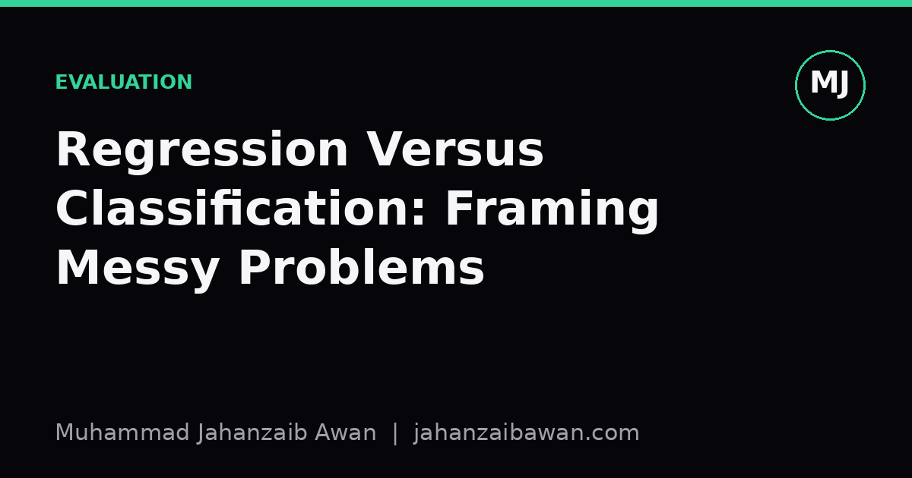

Regression Versus Classification: Framing Messy Problems
Before you tune a single hyperparameter, decide what kind of question you are actually asking the data. Get the framing wrong and no model will save you.

The choice you make before you choose a model
Most modelling mistakes I have seen do not come from a badly tuned learning rate or a missing regularisation term. They come earlier, at the point where someone decides whether the target variable is a number or a category, and does not revisit that decision. It feels like a small technical detail. It is actually the decision that shapes every metric, every error analysis, and every conversation with a stakeholder afterwards.
Take a genuinely messy example: predicting how long a customer support ticket will take to resolve. You could frame this as regression, predicting resolution time in hours. You could also frame it as classification, predicting whether a ticket will be resolved within a service level agreement, say four hours, yes or no. Both are defensible. Both use the same raw data. They will lead you to different models, different failure modes, and different business conversations, and it is worth being honest that the choice is rarely dictated purely by the data.
The temptation is to default to regression because the underlying quantity is genuinely continuous, time is not naturally a category. But continuity in the world does not obligate continuity in the model. What matters is what decision the prediction feeds into, and how errors of different kinds actually cost the business.
A worked example: resolution time in hours
Suppose your historical data shows resolution times ranging from fifteen minutes to three days, with a median around two hours and a long right tail from a small number of complex tickets. If you frame this as regression and train a gradient boosted model, you might get a mean absolute error of forty minutes. That sounds respectable. But look closer: most of that error is concentrated in the tail. Simple tickets are predicted to within ten minutes; the complex ones might be off by several hours in either direction, and it is those tickets that actually matter for staffing decisions.
Now frame the same problem as classification: will this ticket breach the four hour SLA, yes or no. Suddenly the messy tail becomes irrelevant to the label, because a ticket that takes six hours and one that takes twenty hours are both simply breaches. You lose information, deliberately, in exchange for a metric that maps directly onto what the operations team cares about: precision and recall on breach prediction, which feeds into staffing and escalation decisions.
Here is the part that is easy to miss: if you only ever evaluated the regression model using mean absolute error, you would never notice that it was systematically underestimating the tickets closest to the four hour boundary, which are precisely the ones where a wrong prediction is most costly. A single aggregate error metric can hide the exact failure that determines whether the model is useful. This is why I think the framing decision and the metric decision have to be made together, not sequentially. Choosing regression and then bolting on a threshold at evaluation time is not the same as choosing classification from the start, because the training objective itself shapes where the model spends its effort.
There is a middle path too, and it is underused: ordinal regression, or simply binning the continuous target into a small number of meaningful buckets, say under one hour, one to four hours, four to twenty four hours, and over twenty four hours. This keeps some of the ordering information that pure classification throws away, while giving you class-level metrics that map onto real operational tiers. It is not the sophisticated choice, it is the pragmatic one, and pragmatic often wins in production.

Questions that actually settle the decision
I have found it useful to interrogate three things before writing any training code. First, what decision downstream consumes this prediction, and does that decision itself have discrete thresholds? If a human or a system acts differently above and below some cutoff, classification around that cutoff is often more honest than regression followed by thresholding, because it optimises directly for the boundary that matters rather than for overall numeric accuracy that may not care about the boundary at all.
Second, what does the error distribution of the target actually look like, and is it symmetric enough that a single point estimate is meaningful? Heavily skewed targets, like resolution time, revenue per customer, or time to churn, often punish naive regression because a few extreme values dominate the loss. You can transform the target, use a log scale, or switch to quantile regression, but each of these is itself an implicit framing decision, and it is worth naming it explicitly rather than discovering it by accident when the residual plots look strange.
Third, and this is the one people skip most often, how will the model be evaluated by the people who did not build it? A support operations lead does not think in mean absolute error. They think in how many breaches we will have this week and how many extra staff we need on Tuesday. If your framing does not produce a metric that translates cleanly into their language, you will spend more time explaining the model than improving it, and stakeholders will quietly stop trusting outputs they cannot interpret.
None of this means classification is always the safer choice. Sometimes the continuous quantity is exactly what is needed, for instance when the output feeds into a downstream optimisation that genuinely needs a number, like scheduling algorithms that allocate staff hours. Collapsing that into categories would throw away information the optimiser actually needs. The point is not that one framing is superior in general. It is that the framing has to be chosen deliberately, against the actual downstream use, rather than defaulted to based on what the raw column type happens to look like in your dataframe.
The practical takeaway
Before building anything, write down, in one sentence, what decision the prediction will change, and whether that decision has a natural threshold. If it does, lean towards classification or ordinal binning around that threshold, and design your evaluation metric to reflect the cost of crossing it wrongly. If the downstream use genuinely needs a precise magnitude, keep regression, but check the error distribution honestly, particularly in the tails, before trusting an aggregate metric. The model architecture is rarely the hard part of this problem. The hard part is being honest, early, about what question you are actually answering, and who has to act on the answer.